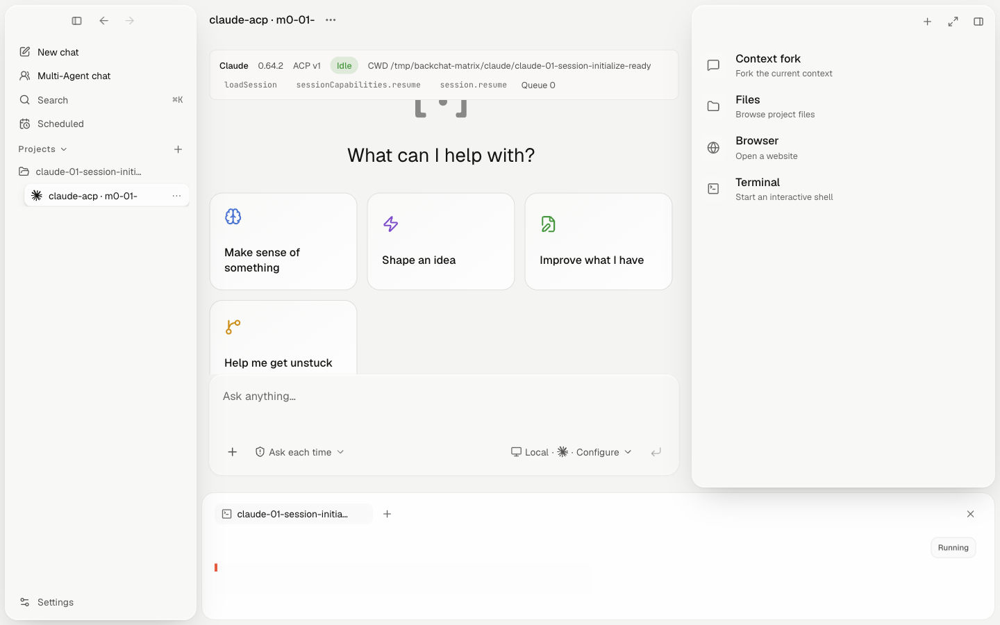

session.initialize-ready
Claude 0.64.2

- Provider / model
- DeepSeek Anthropic · deepseek-v4-flash
- Run
- 2026-08-06T04:45:26.085Z · 22 ms
- Protocol basis
- ACP v1 plus Backchat canonical event and visible Electron GUI projection
- Visible locator
[data-session-runtime="true"][data-gui-feature="session.initialize-ready"]- Expected
- The initialized ACP session identity and ready state are visible in the GUI.
- Observed
- Claude 0.64.2 ACP v1 Idle CWD /tmp/backchat-matrix/claude/claude-01-session-initialize-ready loadSession promptCapabilities.image promptCapabilities.embeddedContext mcpCapabilities.http mcpCapabilities.sse session.fork session.resume session.close Queue 0
- In screenshot
- yes